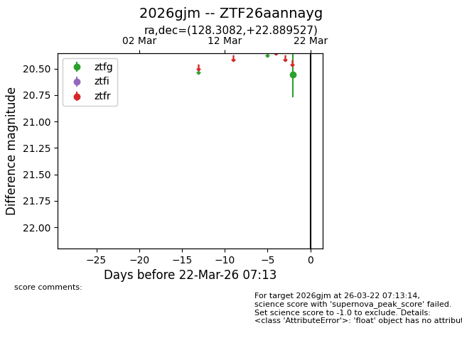
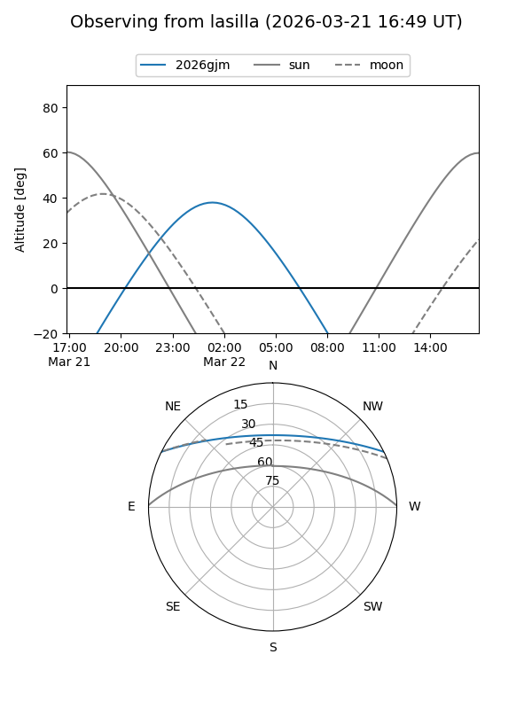
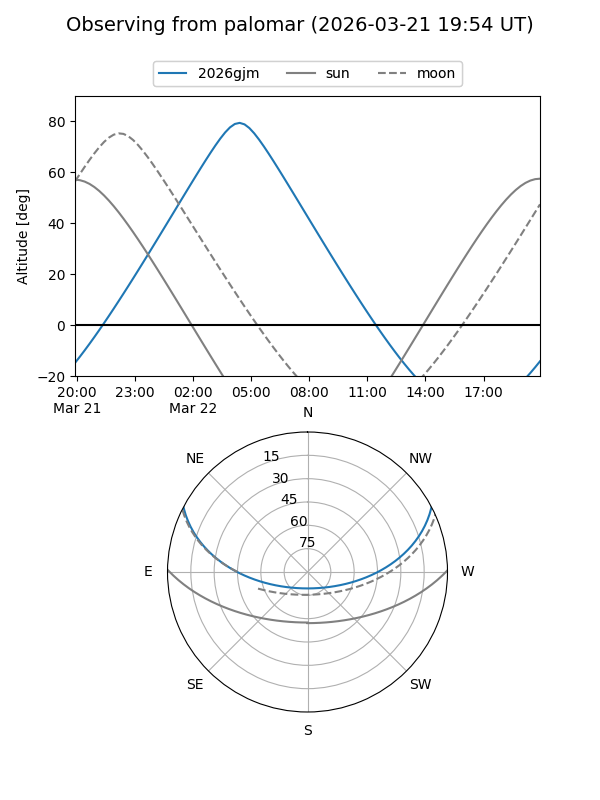

2026gjm
Target 2026gjm at 2026-03-22 07:15
Aliases and brokers:
FINK: link
Lasair: link
ALeRCE: link
TNS: link
YSE: link
alt names
ZTF26aannayg (ztf,fink_ztf)
2026gjm (tns,yse)
Coordinates:
equatorial (ra, dec) = 128.3082,+22.88953
equatorial (HMS+DMS) = 08:33:13.97,+22:53:22.30
galactic (l, b) = (201.6695,+31.98347)
Flags:
Photometry:
last ztfg=20.56
1 ztfg detections
Lightcurve

Visibility


Additional plots